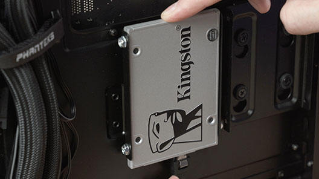

Módulo 8: Instalando o Armazenamento
O armazenamento é a memória de longo prazo do seu PC. Vamos instalar o local onde o Windows, seus programas e jogos ficarão guardados.
⚠️ Onde instalar o Windows?
Sempre priorize o SSD para o sistema operacional. Um SSD é até 50 vezes mais rápido que um HD mecânico, fazendo o PC ligar em segundos em vez de minutos.

1. SSD M.2 NVMe (O chip de alta velocidade)
Ele parece um "pente" pequeno e é instalado diretamente na placa-mãe, sem cabos.
Como instalar: Insira o SSD no slot M.2 em um ângulo de 30°. Ele ficará levemente "empinado". Empurre-o para baixo suavemente e prenda-o com o parafuso minúsculo que vem na placa-mãe.

2. Unidades SATA (SSD 2.5" ou HD 3.5")
Diferente do M.2, estas unidades precisam de dois cabos vindo de lugares diferentes.
Os dois cabos: Conecte o cabo de Dados SATA (fininho, vai na placa-mãe) e o cabo de Energia SATA (mais largo, vem direto da fonte). Note que ambos possuem um conector em formato de "L" para evitar inversão.

3. Portas na Placa-mãe
Conecte o cabo de dados nas portas identificadas como SATA_0 ou SATA_1.
Dica: Se você estiver usando um SSD M.2 e um HD comum ao mesmo tempo, verifique o manual da sua placa, pois às vezes o uso do slot M.2 desativa uma das portas SATA.
Onde o Windows vai morar?
Responda o quiz de armazenamento para concluir este módulo.